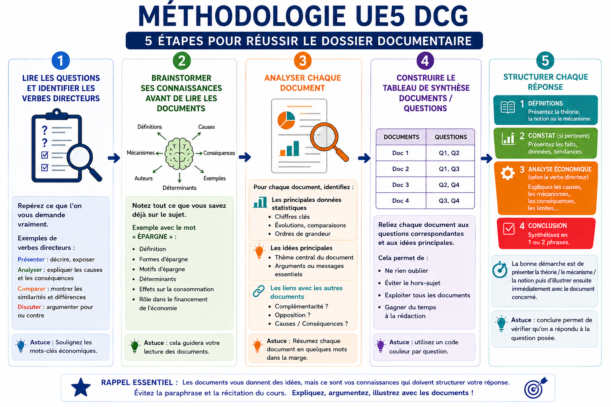

Réussir le dossier documentaire en UE5 du DCG

Pourquoi autant d'étudiants perdent des points à l'épreuve UE5 du DCG ?
Chaque année, des étudiants sérieux, qui ont travaillé leurs cours d'économie DCG, sortent de l'épreuve UE5 du DCG avec une note décevante au dossier documentaire.
Le dossier documentaire, c'est une épreuve difficile parce qu'on est à cheval entre la restitution de connaissances et la synthèse documentaire. Il est composé de documents (textes, graphiques, tableaux) et des questions à traiter. Le piège classique ? Se contenter de reformuler ce qu'on lit, voire paraphraser. Et là, la note s'effondre.
La bonne nouvelle : la méthodologie en UE5 du DCG s'acquiert. Ce n'est pas une question d'intelligence ou de talent inné. C'est une technique et elle s'acquiert. Dans cet article, on va parcourir ensemble les étapes concrètes pour aborder l'épreuve d'économie DCG avec méthode, éviter les erreurs qui coûtent cher, et construire des réponses qui rapportent vraiment des points.
1. Comment analyser efficacement un sujet en UE5 DCG ?
Commencer par lire les questions et pas les documents
Contre-intuitif ? Pas vraiment. Avant de plonger dans les documents, lis attentivement toutes les questions. Pourquoi ? Parce que c'est la consigne qui oriente ta lecture. Si tu lis les documents en aveugle, tu n'y vois que du texte. Si tu sais ce qu'on te demande, tu vas y voir des éléments de réponse.
Les verbes directeurs : le mode d'emploi de ta réponse
Chaque question contient un verbe directeur qui te dit comment répondre. Ce n'est pas anodin.
- Définir → tu dois donner une définition précise et rigoureuse
- Expliquer → tu dois exposer des mécanismes de cause à effet
- Analyser → tu dois aller au-delà du constat : constat puis causes, conséquences, limites
- Illustrer → tu dois apporter des exemples concrets pour appuyer une idée
- Comparer → tu dois mettre en regard deux éléments et relever similitudes et différences
Ne jamais ignorer ces verbes. Un étudiant qui « explique » quand on lui demande d'« analyser » perd des points et inversement.
Définir les mots-clés avant tout
Avant de rédiger quoi que ce soit, identifie les mots-clés de la question et définis-les mentalement (ou sur ton brouillon)… Les flashcards sont justement là pour t'aider à mémoriser ces définitions. La méthode économie DCG repose énormément sur la rigueur conceptuelle. Une réponse sans définitions préalables, c'est une réponse qui perd automatiquement des points…
Le brainstorming : activer tes connaissances AVANT de lire les documents
Voici un réflexe qui change tout : dès que tu lis une question, note au brouillon tout ce que tu sais déjà sur le sujet. Pour y parvenir, les cartes mentales sont super utiles.
Exemple concret. La question porte sur l'épargne des ménages. Avant d'ouvrir le premier document, pose-toi :
- Qu'est-ce que l'épargne ? (définition : fraction du revenu non consommée)
- Quels sont ses déterminants ? (revenu, taux d'intérêt, incertitude, patrimoine…)
- Quelles sont ses formes ? (épargne liquide, financière, immobilière…)
- Quels sont les motifs d'épargne ? (précaution, retraite, transmission…)
Ce travail préalable te permet ensuite de faire une lecture intelligente des documents. Tu ne lis plus passivement : tu cherches des éléments qui confirment, nuancent ou complètent ce que tu sais déjà.
2. Comment exploiter intelligemment le dossier documentaire en économie au DCG ?
Beaucoup d'étudiants lisent les documents en cherchant des phrases à recopier. C'est la catastrophe assurée. Les documents servent à alimenter et illustrer tes connaissances — pas à les remplacer.
Relève :
- Les principales données statistiques
- 3 à 4 idées principales par document
Réaliser un tableau de synthèse peut te permettre de gagner en efficacité pour structurer tes réponses. On peut le présenter en format paysage, avec les documents en colonnes et les questions en lignes :
| Doc 1 | Doc 2 | Doc 3 | Doc 4 | |
|---|---|---|---|---|
| Thème principal | Dépenses publiques | Prélèvements obligatoires | TVA | … |
| Question 1 | Idée principale | Para. 2 | — | — |
| Question 2 | — | — | Partie droite du tableau | — |
| Question 3 | — | — | Graphique : 50 % de… | — |
| Question 4 | Idée : … | — | — | — |
Tu le remplis au fur et à mesure de ta lecture des documents et cela te permet de vérifier deux choses essentielles avant de rédiger :
- Chaque réponse s'appuie explicitement sur au moins un document. Si une case est vide, c'est que tu n'as pas encore trouvé le lien — retourne au document.
- Tous les documents sont exploités. Aucun ne doit être ignoré. Oublier un document, c'est perdre des points mécaniquement.
Il faudra citer les documents à mesure de la réponse donc c'est bien pratique.
Relier documents et questions : la logique des liens
Quand une question mobilise 2 ou 3 documents, ne les traite pas séparément. Demande-toi :
- Ces documents disent-ils la même chose ? (complémentarité)
- Se contredisent-ils ? (opposition, nuance)
- L'un apporte-t-il des données que l'autre commente ? (relation cause-effet)
3. Comment structurer une réponse qui rapporte des points à l'UE5 ?
L'introduction : les définitions sont OBLIGATOIRES
Toute réponse dans le dossier documentaire doit s'ouvrir sur une définition des concepts clés. C'est non négociable.
Si la question porte sur les politiques économiques post-Covid, tu dois définir : politique économique, politique d'offre et de demande, politique structurelle, politique conjoncturelle (budgétaire, monétaire)… Ce cadrage montre au correcteur que tu maîtrises les concepts et que ta réponse sera structurée.
Structurer selon le verbe directeur employé
Le verbe directeur te dicte la structure. Dans la grande majorité des cas, il faut :
- Faire le constat de la situation actuelle : quels faits observe-t-on ? Quelles sont les grandes tendances ? Les évolutions significatives ?
- Exemple du verbe analyser… : pourquoi ces faits ? Quelles causes ? Quelles conséquences ? Quelles limites ?
Expliciter les mécanismes économiques identifiés
❌ À ne pas faire
« L'épargne va stimuler la consommation et donc la croissance. »
C'est flou. Le mécanisme économique n'est pas explicité.
✅ Ce qu'on attend
« L'épargne correspond à la fraction du revenu que les ménages ne consomment pas. Lorsque les ménages choisissent de désépargner — en puisant dans leurs réserves accumulées — ils augmentent leur consommation. Or la croissance économique résulte de la somme des dépenses de consommation, d'investissement et du solde des échanges extérieurs. C'est pourquoi les pouvoirs publics cherchent, en période de ralentissement, à soutenir la consommation des ménages, notamment par des politiques de relance budgétaire. »
La différence ? Le mécanisme est expliqué pas à pas. Le correcteur voit que tu comprends, pas que tu récites.
En face de chaque connaissance, des éléments tirés des documents sont présentés, en citant le document de manière à présenter une analyse économique complète.
Conclure en deux phrases
Une courte conclusion en réponse à la consigne, à la fin de chaque réponse, c'est une façon de vérifier que tu as répondu à l'intégralité de la consigne. Si tu es incapable de formuler une synthèse en deux phrases, c'est souvent le signe que ta réponse manque de cohérence.
4. Les erreurs qui font chuter la note à l'UE5 du DCG ?
La paraphrase des documents
Recopier ou reformuler le contenu des documents sans y ajouter de connaissances personnelles, c'est l'erreur numéro un. Le correcteur évalue ta capacité à expliquer une situation économique, pas à résumer des textes.
Réciter le cours sans lien avec les documents
L'erreur inverse existe aussi. Certains étudiants, bien préparés, se lancent dans une récitation exhaustive de leur cours sans jamais faire le lien avec les documents du sujet. Parfois ils commencent avec le cours, puis font un résumé des documents. Résultat : la réponse est hors-sujet ou déconnectée de la réalité observée dans les documents.
La règle d'or : les documents t'aident à identifier les idées à mobiliser, tes connaissances te permettent de les expliquer. Il faut donc présenter la théorie / le mécanisme / la notion puis d'illustrer ensuite immédiatement avec le document concerné.
L'absence d'analyse des mécanismes
Dire que « le chômage augmente » ou que « les dépenses publiques progressent » sans expliquer pourquoi ni avec quels effets, c'est rester en surface. L'épreuve d'économie DCG évalue ta capacité à raisonner économiquement, pas à observer.
Des réponses non structurées
Une réponse sans introduction, sans plan, sans conclusion, même si elle contient de bonnes idées, sera difficile à valoriser pour le correcteur. La structure est une compétence à part entière, évaluée en tant que telle dans l'analyse documentaire DCG.
Conclusion : la méthode en DCG, pour l'UE 5, c'est du temps gagné le jour J
Réussir l'UE5 du DCG, ce n'est pas accumuler le plus de connaissances possible. C'est savoir les mobiliser au bon moment, de la bonne façon, en réponse à une question précise.
La méthodologie du dossier documentaire n'est pas une contrainte supplémentaire, c'est un filet de sécurité. Chaque étape de cette méthode (brainstorming, tableau de synthèse, structure de réponse) est conçue pour t'éviter de partir dans le mauvais sens et pour valoriser ce que tu sais vraiment.
N'oublie pas de bien gérer ton temps le jour J. Tu retrouveras les contraintes dans la page Présentation de l'épreuve UE5.
Le bon réflexe : t'entraîner sur des sujets complets, pas seulement lire tes cours. La progression est rapide quand la méthode est installée.
Tu n'es pas perdu·e face à cette épreuve — tu as juste besoin de la bonne boussole.
FAQ : réussir le dossier documentaire en UE5 DCG
Comment réviser efficacement l'UE5 du DCG ?
Le plus efficace est de combiner apprentissage du cours et entraînement méthodologique. Les flashcards permettent de mémoriser rapidement les définitions et mécanismes économiques essentiels en UE5 DCG.
Comment retenir les mécanismes économiques en économie DCG ?
Les mécanismes économiques sont plus faciles à comprendre lorsqu'ils sont visualisés. Les cartes mentales aident à relier les notions entre elles et à construire un raisonnement économique clair le jour de l'épreuve.
Faut-il apprendre les définitions par cœur en UE5 DCG ?
Oui, les définitions sont indispensables dans le dossier documentaire. Les flashcards d'économie DCG permettent justement de gagner du temps pour mémoriser les notions importantes et les mobiliser rapidement pendant l'épreuve.
Comment éviter le hors-sujet dans le dossier documentaire ?
Pour éviter le hors-sujet, il faut identifier les mots-clés de la question et s'interroger sur le verbe directeur afin de structurer sa réponse conformément aux attentes du sujet.
Quelle est la principale erreur en dossier documentaire sur l'UE5 du DCG ?
La principale erreur des candidats consiste soit à paraphraser les documents, soit à réciter leur cours sans jamais faire de lien avec les documents. Or, ce sont les connaissances qui vont structurer les réponses.